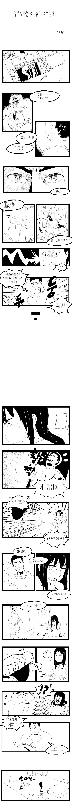
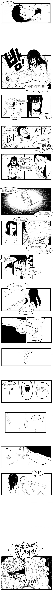
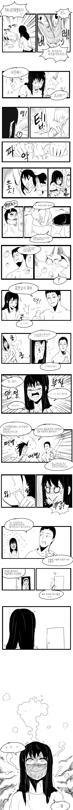
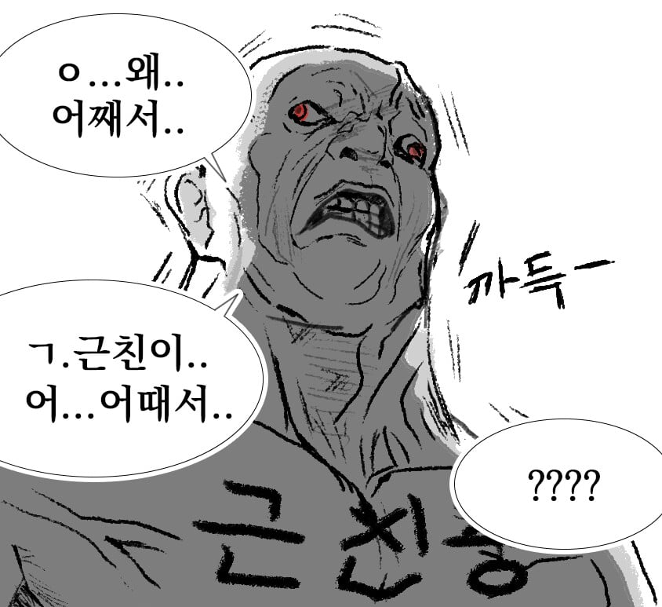
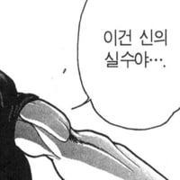

56 · 23 · 2 시간 전 · 원문




수집 당시 댓글 23개
코드싫어 · 18 시간 전
오늘도야근이다 · 7 시간 전
오빠놈 ... 여동생의 일일 남친을 먹어 버렸어 .... 아니 그전에 보지에서 딸기향이????
↳ 답글 · 라면에주먹밥 · 5 시간 전
러브젤이지
↳ 답글 · 예의는아주밥말아먹음 · 2 시간 전
콘돔아닐까
곤뇽ㄴㅣ · 5 시간 전
딸기향..
↳ 답글 · 부리부리대마왕 · 2 시간 전
딸기양..아름답소..
파랑1 · 2 시간 전
파카사탕 · 2 시간 전

크툴루 · 2 시간 전
오이에... 간이 되어있는....
황두남 · 2 시간 전
가시오이인가요 그냥 백오이인가요
깁기 · 2 시간 전
오징어맛?
미세민지 · 2 시간 전
연관된 얘긴데 파라핀 치료??라고 해서 신경통 있는 분들이 데운 촛농 비슷한 성분에 손 담그거나 무릎에 붙이는 그런 치료 하는걸 본 적이 있음
↳ 답글 · 미녀와야스 · 2 시간 전
나도 그거 해봣는데 그건 그냥 목욕탕가면 가끔 있는 존나뜨거운 탕 정도 임 한두번 해보면 견딜만하고 재밋음
↳ 답글 · 바나나맛분유 · 2 시간 전
파라핀은 뜨끈함
↳ 답글 · 렙에이거적을려고들어왔다 · 2 시간 전
녹는점 낮고 뜨끈해서 하면 재미있음
Ultragear · 2 시간 전
남매순애
네비두라 · 2 시간 전
이건 근친보다는 동서쪽 아닌가?
어휴극혐 · 2 시간 전
반성하는중 · 2 시간 전
어케 뷰지에서 딸기향이남?
↳ 답글 · 어휴극혐 · 2 시간 전
콘돔
↳ 답글 · 반성하는중 · 2 시간 전
ㅇㅎ
알이즈웰 · 2 시간 전
그냥 촛농으로 하면 뒤지게 뜨거워요 꼭 성인용품점에서 전용 촛농을 사도록 해요 안전!
옴뇸뇸뇸영국요리 · 10 분 전
얼음물 똑똑 떨어뜨리면 은근히 저온초랑 비슷한 느낌이라 너무 무서우면 얼음물로 입문해도 괜찮
댓글
수집 당시 댓글 23개
코드싫어 · 18 시간 전
오늘도야근이다 · 7 시간 전
오빠놈 ... 여동생의 일일 남친을 먹어 버렸어 .... 아니 그전에 보지에서 딸기향이????
· 라면에주먹밥 · 5 시간 전
러브젤이지
· 예의는아주밥말아먹음 · 2 시간 전
콘돔아닐까
곤뇽ㄴㅣ · 5 시간 전
딸기향..
· 부리부리대마왕 · 2 시간 전
딸기양..아름답소..
파랑1 · 2 시간 전
파카사탕 · 2 시간 전

크툴루 · 2 시간 전
오이에... 간이 되어있는....
황두남 · 2 시간 전
가시오이인가요 그냥 백오이인가요
깁기 · 2 시간 전
오징어맛?
미세민지 · 2 시간 전
연관된 얘긴데 파라핀 치료??라고 해서 신경통 있는 분들이 데운 촛농 비슷한 성분에 손 담그거나 무릎에 붙이는 그런 치료 하는걸 본 적이 있음
· 미녀와야스 · 2 시간 전
나도 그거 해봣는데 그건 그냥 목욕탕가면 가끔 있는 존나뜨거운 탕 정도 임 한두번 해보면 견딜만하고 재밋음
· 바나나맛분유 · 2 시간 전
파라핀은 뜨끈함
· 렙에이거적을려고들어왔다 · 2 시간 전
녹는점 낮고 뜨끈해서 하면 재미있음
Ultragear · 2 시간 전
남매순애
네비두라 · 2 시간 전
이건 근친보다는 동서쪽 아닌가?
어휴극혐 · 2 시간 전
반성하는중 · 2 시간 전
어케 뷰지에서 딸기향이남?
· 어휴극혐 · 2 시간 전
콘돔
· 반성하는중 · 2 시간 전
ㅇㅎ
알이즈웰 · 2 시간 전
그냥 촛농으로 하면 뒤지게 뜨거워요 꼭 성인용품점에서 전용 촛농을 사도록 해요 안전!
옴뇸뇸뇸영국요리 · 10 분 전
얼음물 똑똑 떨어뜨리면 은근히 저온초랑 비슷한 느낌이라 너무 무서우면 얼음물로 입문해도 괜찮